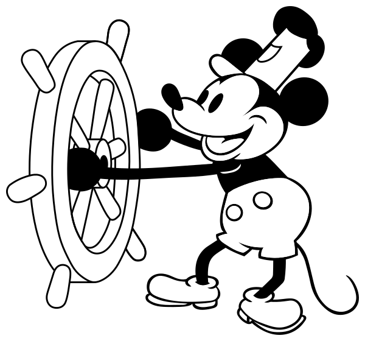
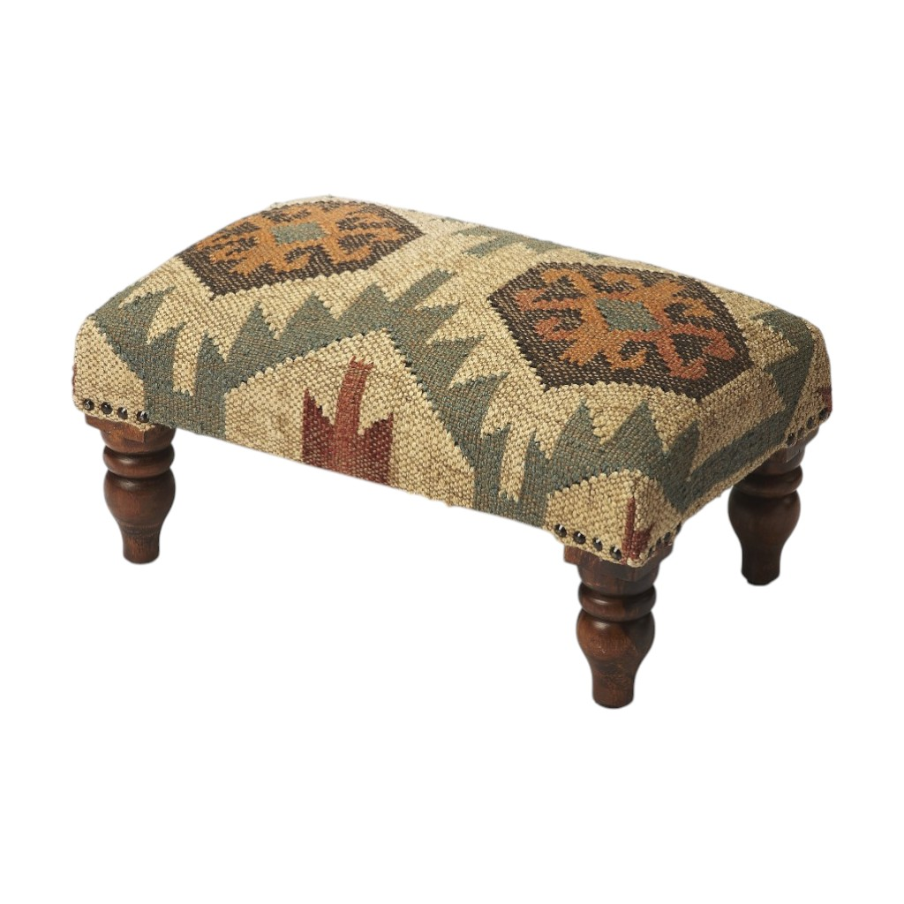
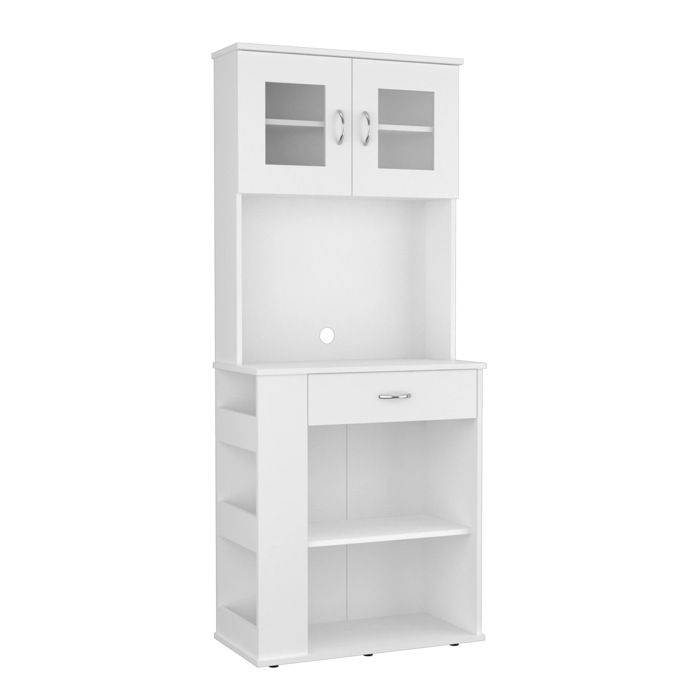
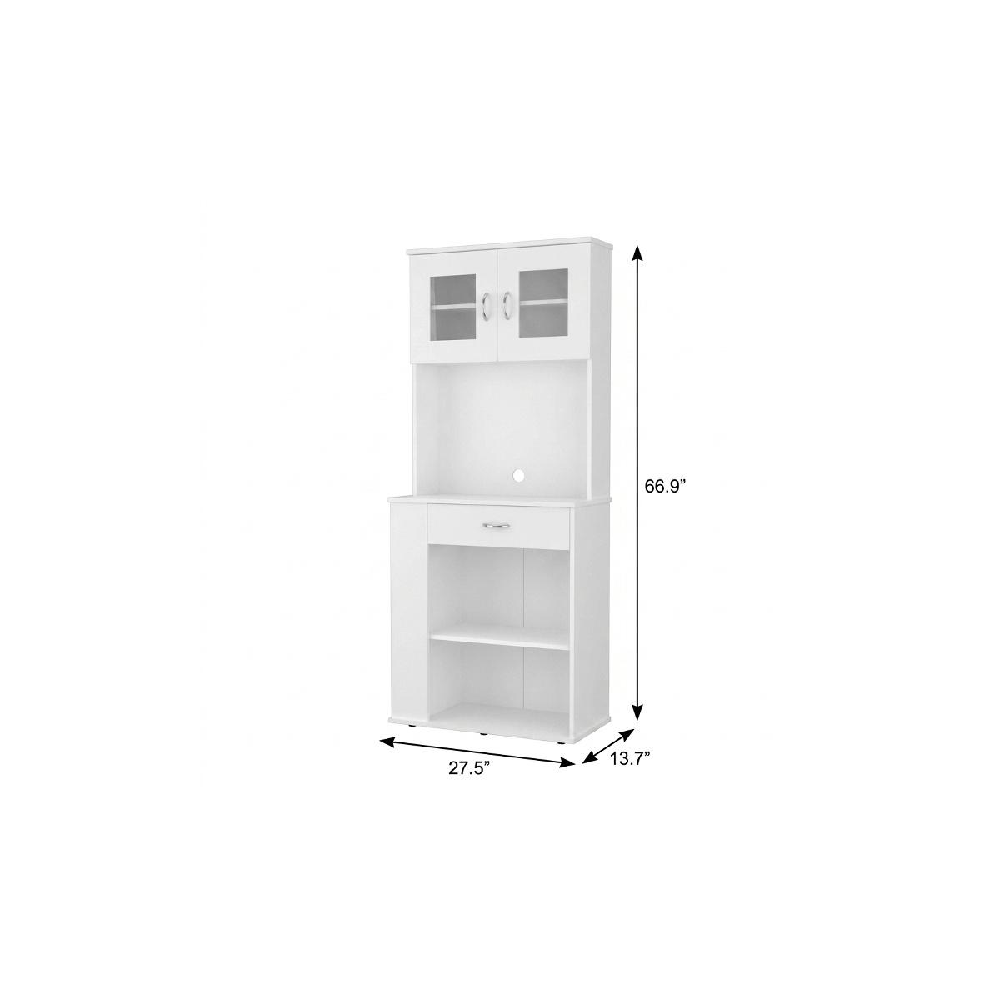

Hanieh
Masoomi
Machine learning, NLP & LLM systems

Mickey from Steamboat Willie (1928), public domain
2026
M.Sc. · Bauhaus-Universität Weimar
Perceived Music Origin
Every track was AI-made. Only the label changed.
- 21 listeners
- 6 tracks
- ECG · HRV
Revealing the label raised arousal. AI vs. human made no significant difference.
GitHub ↗2024 – 26
Data Co Lab
Voice Ordering Assistant
Speech in, order out.
- −20% running cost
- STT → LLM → TTS
Caching repeated requests skips the LLM call.
2024 – 26
Data Co Lab
Product Attribute Extraction
LLMs and VLMs read a product photo and check what it claims to be.
- ~90% accuracy
- FastAPI · Django
Rule-based checks back up the model, so reviewers see far fewer products.

2024 – 26
Data Co Lab
Dimensional Images
A vision-language pipeline finds product measurements and draws them onto the photo.
- ~90% accuracy
- VLM · OpenCV
Drag the handle.


Before After2022 – 24
K. N. Toosi University of Technology
Student Assistant
Helping classmates through the maths behind machine learning.
2022
Intern · Iran Telecommunication Research Center
Who Gets the Coupon?
Reproduced a research paper on predicting shopper behaviour to target coupons.
- 417K+ sessions
- XGBoost · CatBoost
- Keras
k-fold validation, early stopping, class weights and tuning.
2021 – 23
Research Assistant · K. N. Toosi University
Spotting Depression in Reddit Posts
Text goes in, classic ML models vote.
- 87.8% accuracy
- 6 classifiers
- 618 features
Collected through Reddit's public API. Posts shown are made up.
Posts from Reddit communities
Each post gets a label from its community
Pruned and balanced, equal classes
2864 posts × 618 features
- KNN
- SVM
- DT
- RF
- GNB
- CatBoost
Pick a post
B.Sc.
Linear Algebra's course project · K. N. Toosi University
Face Gestures with PCA
Principal components of facial landmarks, used to move one person's expression onto another.
- PCA
- NumPy
Open to part-time roles · Weimar
hannahmasoomi@gmail.com- M.Sc. Computer Science for Digital Media · Bauhaus-Universität Weimar 2026 –
- B.Sc. Computer Engineering · K. N. Toosi University 2018 – 23
- Python
- PyTorch
- Keras
- FastAPI
- Django
- LangChain
- Google ADK
- SQL
- Docker
- Git